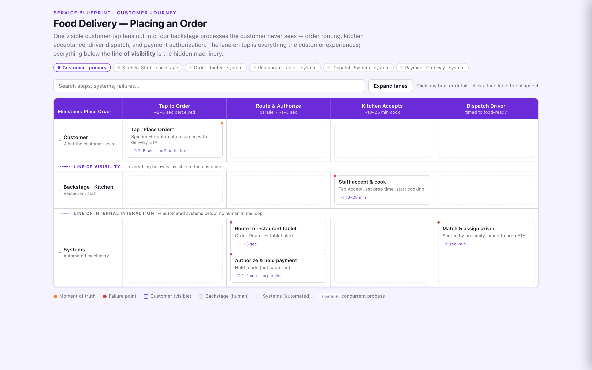

Express
One map, rendered for the room.
The same journey renders however the audience needs — just ask. Click any to explore it live.

"Make an interactive map our team can pull up in the review."
Explore live →
"Render it as a swimlane, themed to our brand colors."
Explore live →
"Give me a dark timeline where the weeks-long wait dwarfs every step."
Explore live →
"Turn it into a storyboard — frame by frame, like a film."
Explore live →